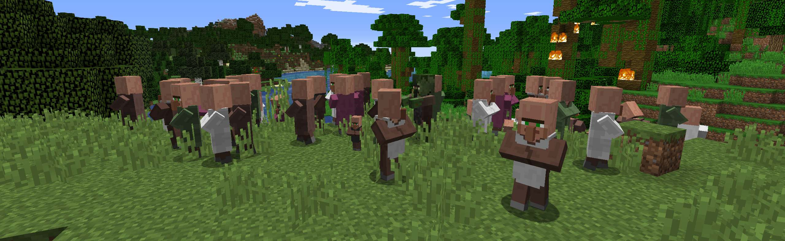

About minecraft-anarchy.org

Being tired of waiting in the 2b2t.org queue, we decided to host a minecraft anarchy server that is free to join for everyone.
We wanted a lagfree experience with very little rules and intervention from admins to have the true minecraft anarchy experience.
Connecting
The server is reachable via the public Internet at minecraft-anarchy.org.
Spawn gear
To make your frist start a good one, each time you are spawned at the world spawn you get:
- Enchanted leather armor
- Stack of melons
- Iron pickaxe, Iron shovel
Player commands
The following commands are available:
| Command |
Effect |
| /tp spawn | home |
Teleports you to spawn or home. Can only be used every 10 minutes. |
| /sethome |
Sets the location for your home teleport point. |
| /kill |
Kills your player. |
Rules and Guidelines

§1 Players must be of full legal age (+18 years old).
§2 The server admins will address and prevent any behavior that they consider game breaking. This includes, but is not limited to: very fast methods of loading new chunks, extremely overpowered weapons or travel devices, producing lots of lag.
§3 The server is hosted in germany, which means if you build swastikas or talk xenophobic in chat, the admins will troll you very hard (for an extended period of time, which may ruin your game).
How we protect your privacy

Your connection information is not shared with othersThe servers firewall is configured to block all but few outgoing connections. This way the minecraft server application is prevented from exporting data about you to to Mojang / Microsoft / others.
Your connection information is not permanently saved to diskThis servers webserver and minecraft server application is configured to not write to a logfile on disk. Instead, the log messages are written into a pipe, where they can be read by fail2ban or an administrator for debugging purposes. This means that none of your connection data is permanently written to disk on this server.
Proxy servers are allowedConnections from VPN or proxy servers are not blocked.
You can review and confirm this yourselfYou can review all the configuration of this server and the code of this website at our open source github repository at github.com/minecraft-anarchy/playbook-minecraft-anarchy.
Contact

Please note that we do not provide player support for this server. If someone blows up your house with TNT and you loose all your diamonds, thats your problem.
Email
In any other case feel free to write us mail to minecraft dash anarchy [at] mailbox dot org. We will respond to you if we feel your inquery is relevant.